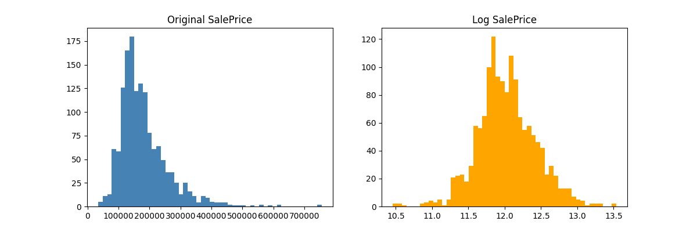
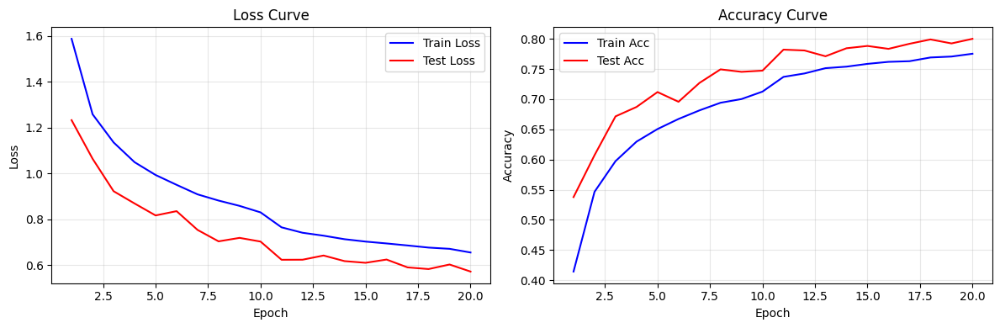
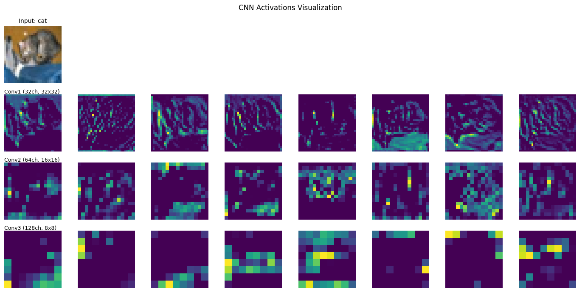
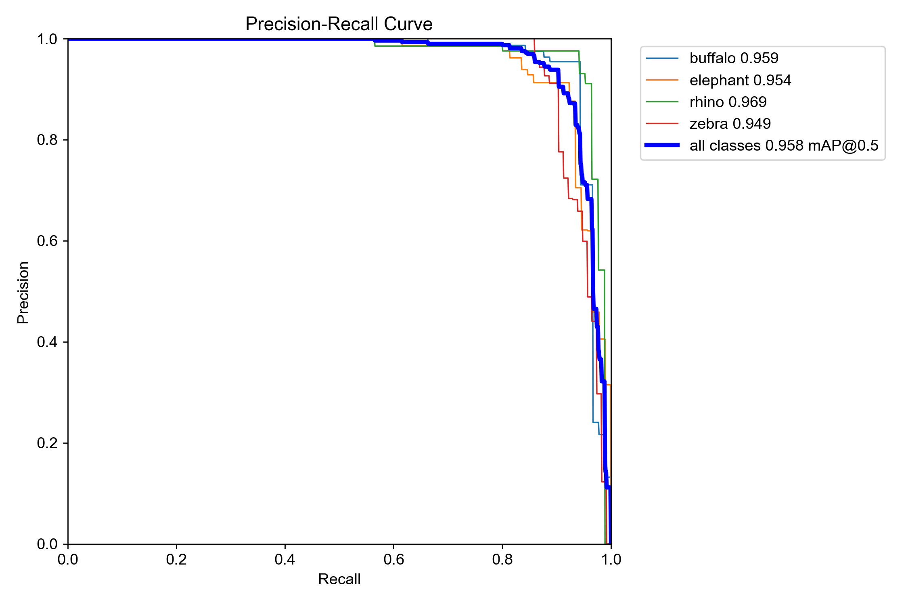

國立臺灣科技大學 MVC Lab（多媒體與電腦視覺實驗室）2025 春季課程的五份作業合集。一學期下來，題目從傳統機器學習開始，依序經過卷積神經網路、自然語言處理、資訊檢索，最後收在物件偵測。這篇把五份作業各自的題目、用的模型、跑出的數字整理成一份索引。每一份都有可驗證的指標，並在 Kaggle 或 dev set 上超過課程基準線。
這五份作業剛好串成一條「深度學習常見任務」的縮影：HW1 用最基礎的機器學習做兩題 Kaggle 入門賽；HW2 進到影像，自己刻一個卷積神經網路認 CIFAR-10 的十類小圖；HW3 進到文字，做意圖辨識與槽位標註；HW4 做搜尋排序，先粗排再用 BERT 細排；HW5 做物件偵測，用 YOLO 在照片裡框出非洲野生動物。一條線走完，等於把分類、序列、檢索、偵測這幾種主流任務各摸過一次。
# 五份作業總覽
| HW | 主題 | 框架 / 模型 | 關鍵指標 |
|---|---|---|---|
| HW1 | Kaggle：房價預測 + 鐵達尼生還 | scikit-learn | RMSE(log) 0.12615 / Acc 0.76555 |
| HW2 | CIFAR-10 CNN + 形態學操作 | PyTorch（3 層 Conv+BN） | Acc 0.8001 / F1 0.7997 |
| HW3 | 意圖辨識 + 槽位標註 | BiLSTM + GloVe 840B.300d | Intent 0.822 / Slot F1 0.8021 |
| HW4 | BM25 + BERT 重排序（IR） | bert-base-uncased | Dev MAP@1000 34.40 / Private 0.41402 |
| HW5 | YOLO11n 非洲野生動物偵測 | Ultralytics YOLO11n | mAP@0.5 0.9577 / 0.5:0.95 0.8018 |
# 逐份拆解
HW1 — 兩題 Kaggle 入門
用 scikit-learn 做兩個經典 Kaggle 競賽：房價預測（回歸）與鐵達尼生還預測（分類）。房價題以對數空間的 RMSE 評分，拿到 0.12615；鐵達尼題以準確率評分，拿到 0.76555。這份是整學期的暖身，把資料清理、特徵處理、交叉驗證這套基本流程跑順。

HW2 — CIFAR-10 CNN 與形態學
自己搭一個三層卷積（Conv + BatchNorm）的網路，認 CIFAR-10 的十類 32×32 小圖，準確率 0.8001、F1 0.7997，超過課程基準線的 0.6397。另外做影像形態學操作（侵蝕、膨脹這類），並把中間各層的特徵圖視覺化輸出，看卷積層實際學到的紋理長什麼樣。


HW3 — 意圖辨識 + 槽位標註
兩個同時訓練的任務：判斷一句話的整體意圖（意圖分類），以及標出句中每個詞的角色（槽位標註）。模型用雙向 LSTM 配 GloVe 840B 300 維詞向量。意圖準確率 0.822，槽位以實體層級的 F1 評分拿到 0.8021，詞層級準確率達 0.9659。

HW4 — BM25 + BERT 兩階段排序
資訊檢索題，做的是「給一個查詢，把最相關的文件排到最前面」。流程分兩階段：先用傳統的 BM25 從大量文件粗排出前 1000 篇，再用 BERT 對這 1000 篇做細排。訓練格式是每筆「1 個正例 + 3 個負例」的四選一，用 bert-base-uncased 微調。
Dev set 的 MAP@1000 從 BM25 單獨的 25.68 提升到加上 BERT 的 34.40，相對提升 33.9%。粗排與細排合併時用網格搜尋掃 5000 組權重（步長 0.001）找到最佳加權值 3.399。
這份在測試集上的表現高於 dev set（Public 0.45446 / Private 0.41402，皆高於 dev 換算值），代表模型學到的排序能力延伸到了沒見過的查詢，沒有只記住開發集。
HW5 — YOLO11n 物件偵測
用 Ultralytics 的 YOLO11n 在非洲野生動物資料集上微調，要在照片裡框出四類動物並標籤。整體 mAP@0.5 達 0.9577，較嚴格的 mAP@0.5:0.95 也守在 0.8018。四類的 per-class mAP@0.5 全部站上 0.94 以上：
| 類別 | mAP@0.5 |
|---|---|
| 水牛 buffalo | 0.959 |
| 大象 elephant | 0.953 |
| 犀牛 rhino | 0.970 |
| 斑馬 zebra | 0.949 |


# 學術誠信聲明
這個 repo 公開出來是個人學習紀錄，方便自己日後回看與分享學習路徑。庫內不收助教提供的 starter code 原始版本；HW4 的 baseline notebook 是我自己填好五個 TO-DO 的版本，並標明出處。課程提供的資料集（documents.csv、intent/slot json 等）一律不收，請循正規管道取得。在學的 MVC Lab 學生請自己寫過一次，歡迎參考結構與思路。
# 技術環境
- 語言 — Python 3.10+（建議 3.10 / 3.11）
- 深度學習框架 — PyTorch 2.x（HW2 / HW3 / HW4 / HW5 皆用到）
- 各週特有套件 — scikit-learn（HW1）、seqeval（HW3）、HuggingFace Transformers（HW4）、ultralytics（HW5）
- 硬體 — CUDA 顯卡建議但非必要（CPU 也跑得動，HW4 / HW5 訓練會慢很多）
- 未入庫 — 模型權重、原始資料集、完整訓練輸出，只保留關鍵的訓練曲線、PR / 混淆矩陣、results.csv
原始碼
五份作業的程式碼、訓練曲線與各自的 README 公開在 GitHub，採 MIT 授權。每份作業的問題定義、模型架構、超參數細節見各自子資料夾。
GHOST8787/ntust-mvclab-2026